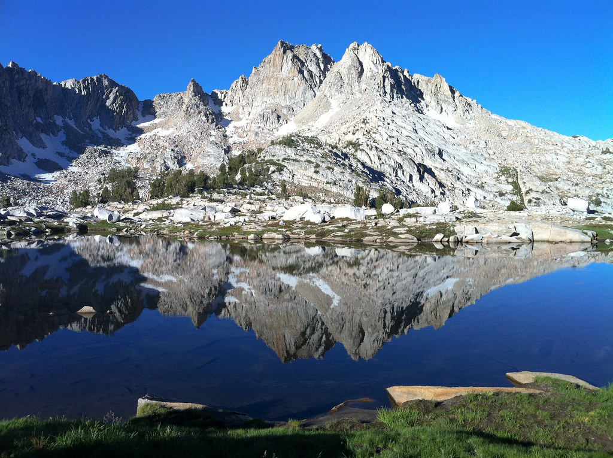

Welcome!
The John Muir Trail is a 211-mile trail that stretches from Yosemite National Park to Mount Whitney in California. It passes through some of the most beautiful wilderness areas in the country and offers stunning views of the Sierra Nevada mountains.
Whether you're an experienced backpacker or just looking for a new adventure, the John Muir Trail is a must-do for anyone who loves the great outdoors.